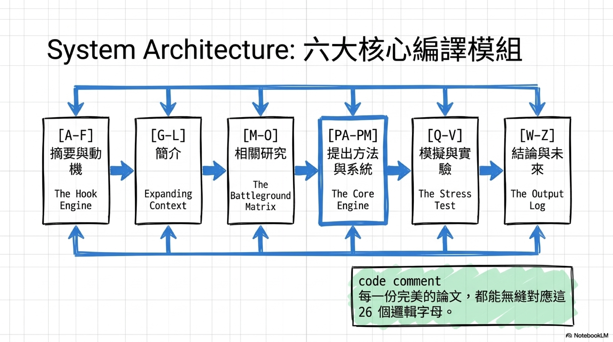

故於補弱 自家的解決方案就是逃用這套A-D-Z的架構 如同資深工程師排查城市錯誤一般 驚確定位並修復論文中的斷烈邏輯鏈墊 為了解決上述痛點 我們建構這套有六大核心模組組成的系統 這六大模組完美對應了英文字幕的26個邏輯節點 保寒作為吸引力引擎的摘藥與洞機 擴展麥洛的簡介作為交風戰場的相關研究 作為核心運善引擎的提出方法與系統 執行壓力測試的模擬與實驗 以及最後輸出日至的結論與未來工作 每一片頂級期間的完美論文 其底層邏輯必定能無奉對應這26個字幕 讓我們進入第一模組